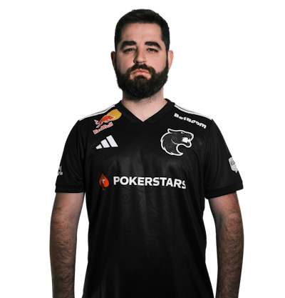
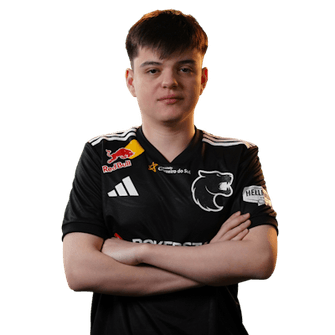
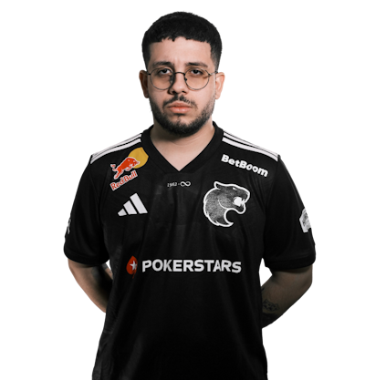
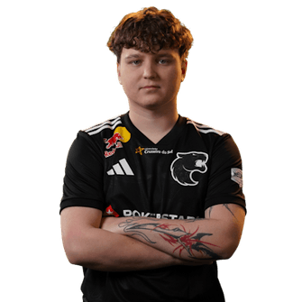
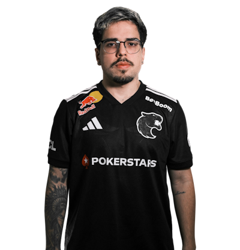

A FURIA Esports é uma das organizações mais tradicionais e reconhecidas do Counter-Strike brasileiro e mundial. Fundada em 2017, a equipe se destacou rapidamente por seu estilo de jogo agressivo, intenso e muito bem organizado, que acabou virando marca registrada da organização. No CS2, a FURIA manteve sua proposta competitiva de alto nível, buscando sempre protagonismo nos principais torneios internacionais. A line brasileira costuma mesclar experiência com juventude, apostando em jogadores sólidos mecanicamente e com forte leitura de jogo, além de um trabalho tático consistente por parte da comissão técnica.

Lenda do Counter-Strike brasileiro, FalleN é o IGL e principal referência estratégica do time.

Jovem promessa, molodoy chega com muita mira e confiança. Representa a nova geração do time, trazendo energia, agressividade e potencial de crescimento.

O grande destaque da FURIA. Extremamente consistente, inteligente e decisivo, KSCERATO é considerado um dos melhores riflers do mundo e a principal estrela da equipe.

Conhecido pelo estilo agressivo e intenso, YEKINDAR traz impacto imediato nas entradas e muita pressão sobre os adversários.

Jogador sólido e confiável, yuurih mantém alto nível há anos. Tem ótima leitura de jogo e costuma aparecer bem em momentos decisivos, sendo peça fundamental no equilíbrio do time.